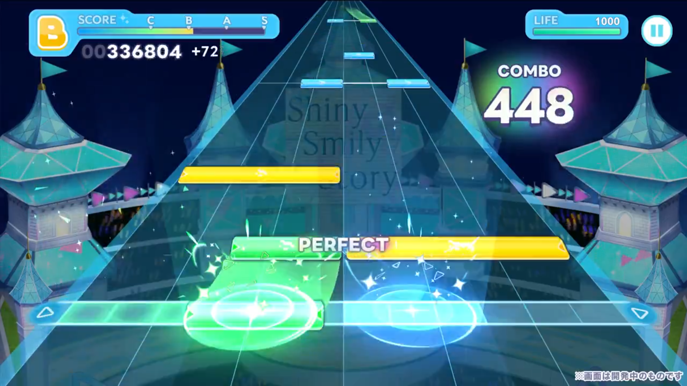
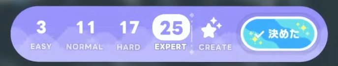
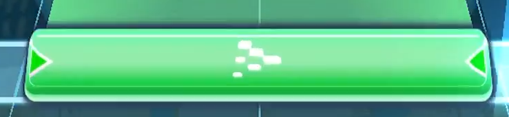

リズムゲーム
初期収録楽曲は150曲以上あり、オリジナル楽曲や歌ってみたでおなじみのカバー曲を楽しめます。
好きな楽曲のMVやライブ映像を見ながら、リズムゲームをプレイできます。
ホロライブドリームスのリズムゲームでは、タップノーツ、ロングノーツ、フリックノーツの3種類のノーツが存在します。
判定は、PERFECT、GREAT、GOOD、BAD、MISSの5種類です。
リズムゲームの遊び方

リズムゲーム画面は6列のラインに合わせてノーツを操作する形式です。
ノーツ速度や判定タイミングを調整できるため、自分の遊びやすい設定にできます。
編成したホロメン同士のセリフや掛け合いも楽しめます。

ホロドリでは、各楽曲にEASY、NORMAL、HARD、EXPERTの4種類の難易度が登場します。
自分に合った難易度で楽しみましょう。
ノーツの種類
タップノーツ

ノーツが流れてきたときに、タイミングよくタップすることで
PERFECTを取れます。
黄色・灰色のタップノーツが流れてくることがありますが、
取り方は変わりません。
ロングノーツ

ノーツがレーンに重なっている間、長押しすることでPERFECTが取れます。
ロングノーツは最後にタイミングよく離す必要はありません。
最後がフリックノーツになっていることがあります。
フリックノーツ

ノーツがレーンに重なった時に任意の方向に指を擦ることで
PERFECTを取れます。
連続で降ってきた場合は、1回1回指を離す必要はなく、画面をなぞり続けることで連続で取ることができます。
黄色のフリックノーツが流れてくることがありますが、取り方は変わりません。
アクセントノーツ

黄色のノーツを指します。
取り方はタップノーツ、ロングノーツ、フリックノーツと変わりません。
判定が少し広いという特徴があります。
スコア関連
スコアは100コンボごとに1%ずつ加算され、
小数点以下は四捨五入され、上限は+10%です。※760は例です
| コンボ数 | 倍率 | スコア | 計算式 |
|---|---|---|---|
| 1～99 | 100% | 760 | 760 × 1.00 |
| 100～199 | 101% | 768 | 760 × 1.01 |
| 200～299 | 102% | 775 | 760 × 1.02 |
| 300～399 | 103% | 783 | 760 × 1.03 |
| 400～499 | 104% | 790 | 760 × 1.04 |
| 500～599 | 105% | 798 | 760 × 1.05 |
| 600～699 | 106% | 806 | 760 × 1.06 |
| 種類 | 計算方法 | 例 |
|---|---|---|
| 通常ノーツ | 基礎スコア × コンボ倍率 | 760 × 1.00 = 760 |
| フリックノーツ | その時点のスコア × 1.05 | 760 × 1.00 × 1.05 = 798 |
| ロング中 | その時点のスコア ÷ 10 | 760 × 1.00 ÷ 10 = 76 |
| 判定 | スコア反映率 | ライフ減少値 |
|---|---|---|
| PERFECT | 100% | 0 |
| GREAT | 80% | 0 |
| GOOD | 50% | 0 |
| BAD | 0% | 50 |
| MISS | 0% | 100 |
| ランク | 必要スコア |
|---|---|
| D | 0～ |
| C | 150,000～ |
| B | 300,000～ |
| A | 600,000～ |
| S | 1,000,000～ |
各判定幅
| ノーマル | 通常 | アクセント |
|---|---|---|
| PERFECT | ±? | ±? |
| GREAT | ±? | ±? |
| GOOD | ±? | ±? |
| BAD | ±? | ±? |
| MISS | ±? | ±? |
| フリック | 通常 | アクセント |
| PERFECT | ±? | ±? |
| GREAT | ±? | ±? |
| GOOD | ±? | ±? |
| BAD | ±? | ±? |
| MISS | ±? | ±? |
| ロングノーツ | 通常 | アクセント |
| PERFECT | ±? | ±? |
| GREAT | ±? | ±? |
| GOOD | ±? | ±? |
| BAD | ±? | ±? |
| MISS | ±? | ±? |
クリエイト譜面
オリジナル譜面を作ったり、ほかのユーザーが作成した譜面で遊ぶこともできます。
CREATE難易度ではユーザー作成譜面の共有にも対応しています。
各種設定